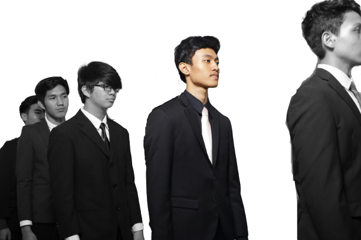

HAFIDZ YANUAR RAFII
2010120011
Proyek UAS Bahasa Markup

Proyek UAS Bahasa Markup
HALO PAK ANGGAR,
pembuatan website ini di peruntukan sebagai proyek akhir untuk UJIAN AKHIR SEMESTER mahasiswa/siswi kelas karyawan ESQ BUSINESS SCHOOL.
disini saya akan menjelaskan bagian-bagian dari website yang saya buat ini dari mulai tema yang saya pilih, navigasi, menu, content, gambar, serta footer.
Pertama-tama saya ucapkan terima kasih kepada bapak anggar sebagai dosen mata kuliah BAHASA MARKUP. yang telah memberikan ilmu tentang dunia bahasa markup untuk pembuatan website ini. langsung saja kita mulai mendeskripsikan isi dalam landing page ini atau page pertama, disini saya menggunakan jamboard saya bagi menjadi 2 konten sebelah kanan yang isinya berupa gambar dan sebelah kiri yang isinya berupa teks atau lebih tepatnya judul, serta tombol untuk langsung masuk ke page profile biodata saya.
saya memilih tema yaitu tempat wisata dengan judul NUSA PENIDA ISLAND, kenapa saya memilih tempat wisata ini karena perlu kita tahu bahwa tempat tersebut sangat indah termasuk tempat wisata yang masuk top 10 beautiful island terutama kawasan selam. lebih detailnya lagi nanti saya jelaskan ini di page content atau page 2.
untuk di page 2 saya akan memberikan content dengan disertai gambar yang membuat pengunjung dapat membayangkan betapa indahnya alam kita, dan juga disertai deskripsi singkat tentang penjelasan tempat wisata tersebut.
dan untuk page terahkir adalah page profile saya yang isinya terdapat image, table, list, serta poin-poin penting pelengkap biodata saya.